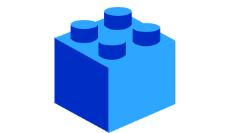
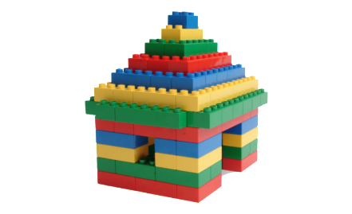
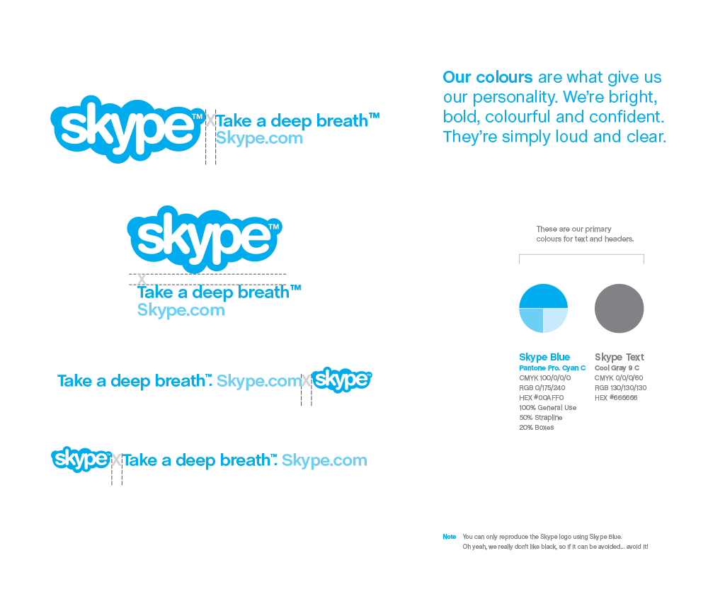
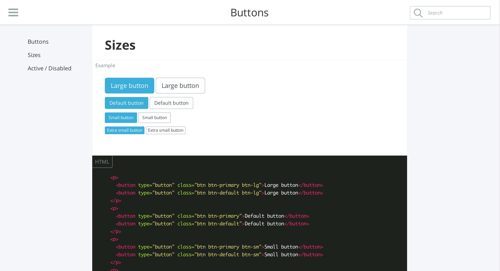

Bonjour !
Moi c'est Yann,
développeur front-end @Antistatique.
</>
Programme :
- Introduction
- Le concept
- Design process
- Styleguides
- Frameworks
- Conclusion
Votre site est terminé
vous êtes satisfait, mais...
J'aimerai ajouter une nouvelle page à mon site.
Ça fera 5 jours de travail
Ou 1 petit jour en modular first !
Ou 1 petit jour en modular first !
Mais c'est trop tard...
Atomic design
Similarly, interfaces are made up of smaller components. This means we can break entire interfaces down into fundamental building blocks and work up from there. That’s the basic gist of atomic design.
Brad Frost, Atomic Design
Il y a 5 niveaux distincts dans le design atomique :
- Atome
- Molécule
- Organisme
- Template
- Page
Atomes
Les atomes sont le matériel de base de construction. Appliqué à une interface web, les atomes correspondent aux balises HTML, comme les champs de formulaire, les boutons et liens.
=
Molécules
Les molécules sont des groupes d'atomes et sont les plus petites unités fondamentales d'un composant. Ces molécules ont leurs propres propriétés et servent d'épine dorsale à nos interfaces.
=
Organisms
Les molécules nous donnent des blocs de construction, et avec, nous pouvons les combiner pour former des organismes. Les organismes sont des groupes de molécules, assemblé pour former une section relativement complexe et distincte d'une interface.
=
Templates
Les templates consistent principalement en des groupes d'organismes assemblés pour former des pages. C'est ici que nous commençons à entrevoir le résultat final de la mise en page d'une typologie.
Pages
Les pages sont des déclinaisons d'un template. Le contenu de l'espace réservé est remplacé par le contenu réel représentant le résultat final.
Avant :
- Design d'une page
- Design d'une page
- OK
- dev
Maintenant :
- Design d'éléments
- Exemple de page
- OK
- dev
&
- Design d'éléments
- Exemple de page
- OK
- dev
Du design au développement
Le développement web est Object Oriented par défaut, donc si le design adopte cette pratique, le processus en serra que plus modulaire. Pour ce faire nous utilisons des styleguides !
Old-school
La façon moderne

Un framework est un ensemble cohérent de composants logiciels structurels, qui sert à créer les fondations ainsi que les grandes lignes de tout ou d’une partie d'un logiciel (architecture).
Wikipedia

- À mettre en pratique dès le début
- Approche modulaire dans le design et l'intégration
- Simplifie la création de nouvelles typologies
- Plus long à mettre en place, mais plus rentable sur le long terme.
- Meilleurs compréhension du design
- Permet au site d'évoluer progressivement
Merci !